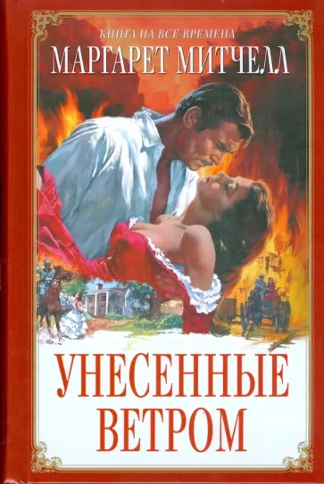
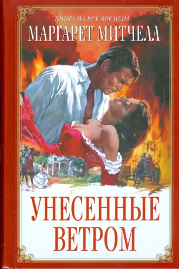

О себе:
Семья и хобби
Счастлива в браке уже почти 10 лет. У нас есть прекрасная дочь Ариша. Уверена, что благодаря дочери интресесуюсь психологией и творчеством! Мне всегда нравилось рисовать и лепить! Вместе с ней ходим на разные мастер-классы, например, мастер-класс из глины и акварельный скетчинг.
Работа
Я имею высшее образование по специальности "Бухгалтерский учет, анализ и аудит". После окончания университета и по настоящее время работаю бухгалтером. Работать бухгалтером не нравиться, не нравиться ежедневно проводить на работе столько времени, хочется больше времени уделять семье! Поэтому решила попробовать себя в it. И я начала изучать направления, сначала начала изучать javascript и с# самостоятельно. Самостоятельное изучение давалось очень нелегко, я не могла сама себя организовать, тяжело было искать информацию для последовательного изучения. Для себя решила, что самостоятельное изучение дается мне тяжело, поэтому стала искать что-то другое и попробовать другое направление: тестирование и frontend-разработка. Бесплатный вебинар с Ксенией убедил меня, что стоит попробовать frontend-разработку и вот я уже учусь! Даже самой не верится!
Любимые книги
 
